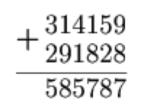

Alex laid out an example of an addition of numbers from cards with numbers on them and then swapped two cards. As you can see, the equality has been violated. Which cards did Alex rearrange?

Check the example "from right to left".
Let's start by examining the example "from right to left". In the ranks of the units and tens, everything is in order, but in the hundreds, there is an error. Hence, one of the digits of this category - 1, 8 or 7 - is rearranged. Assuming that Alex moved two cards "inside" the hundreds $($the only option is to swap 7 and 8$)$, then there will still be an error in the tens of thousands. Hence, one of the digits of the hundred digit has been changed with the digit of a digit in a higher rank. To restore equality in the hundreds, the number 1 can only be changed to a 9. There is only one of such a digit in the higher rank digits. But if 1 and 9 are interchanged, then still there will be an error in the tens of thousands. Digit 8 can be changed only to 6, but not a single digit 6 is in the example there. So, there is only one possibility - to change the number 7. Instead of it, we have to put the number 9. There is only one $($in the higher rank digits$)$, and if they are interchanged, the correct example is obtained.